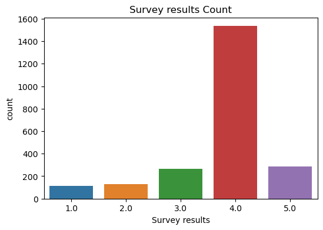
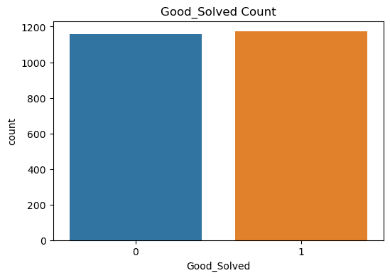
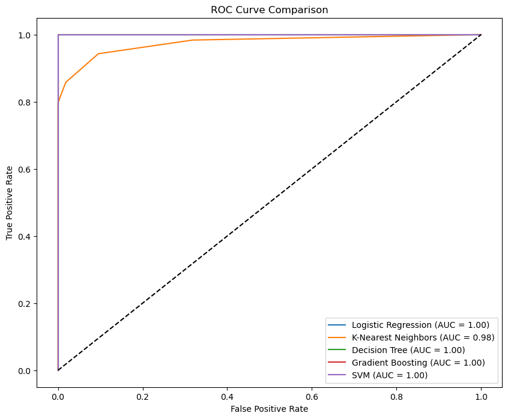
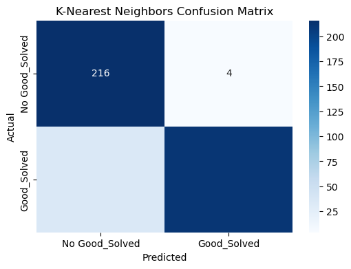
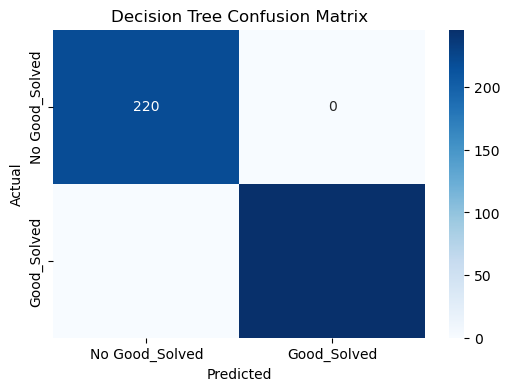

Using technical-support ticket data to explore how machine learning can support staffing decisions, resource allocation, product expertise planning, and service quality.
This project explores how historical technical-support ticket data can be used to support predictive manpower planning in a technical support department or call center. Ticket volumes and support requirements can vary by weekday, product, product group, priority, software release, seasonality, and other operational factors. The goal is to use those historical patterns to estimate future support demand and, in a later stage, translate that demand into staffing requirements.
The current implementation contains a binary machine-learning classification task using Good_Solved as the target. This serves as an initial analytical step for exploring relationships between ticket characteristics, support structures, and ticket outcomes.
The long-term objective is to combine predicted ticket demand with employee skills, certifications, product knowledge, availability, working hours, and shift information. The intended output is not only an estimate of how many employees are required, but also which kinds of knowledge and skills need to be available.
Many business processes have an expected workflow and an actual workflow. Technical-support processes leave digital traces in ticketing systems, and these records can be analyzed to understand what really happens operationally. This creates an opportunity to improve resource allocation, service performance, and workforce planning.
Managers need to determine not only how many employees should be available during a shift, but also what product knowledge and technical skills are required. Workload can change by weekday, season, priority, source, product, product group, new releases, updates, and unexpected technical problems.
If the required resources are unavailable, tickets may remain unresolved longer. This can contribute to service delays, SLA violations, reduced customer satisfaction, productivity losses, and business disruption. Predictive manpower planning aims to prepare for expected workload rather than reacting after demand has already occurred.
The project investigates how historical technical-support data can be transformed into forward-looking workload and staffing information.
How can historical support-ticket data be used to estimate workload for upcoming shifts, weeks, or months?
How many employees may be required to handle the expected ticket volume?
How does expected workload differ between products or product groups?
What types of product knowledge or technical skills may be required based on the predicted ticket distribution?
If a new product or release is introduced, how could the additional workload influence manpower requirements?
How can ticket-demand predictions be combined with employee skills, certifications, and availability to support workforce planning?
Ticket Demand → Required Workload → Required Knowledge → Available Employees → Shift Planning
The project uses the Technical Support Dataset available on Kaggle.
Source:
Technical Support Dataset on Kaggle →
The dataset contains 2,330 technical support ticket records and provides information that can be used to analyze patterns in support demand, ticket handling, and ticket outcomes.
The current dataset does not contain all information required for complete manpower planning. Additional information about employees, employee availability, certifications, product knowledge, and technical skills would be required for a complete workforce-planning solution.
The project uses the Technical Support Dataset from Kaggle. It contains 2,330 technical-support ticket records with information about the ticket, support organization, SLA performance, product context, agents, and ticket outcomes.
Status · Priority · Source · Topic · Agent Group · Agent Name · SLA for first response · SLA for resolution · Agent interactions · Survey results · Product group · Support level · Country
These fields can help describe support demand, how work is distributed, which kinds of issues occur, how tickets are handled, and which operational factors may be associated with successful resolution.
The dataset does not contain all information required for complete manpower planning. A production-grade solution would also need employee availability, skills, certifications, product knowledge, working hours, shift assignments, average handling effort, and ideally more explicit time-based demand history.
Ticket ID, longitude, latitude, created time, expected SLA to resolve, expected SLA to first response, first response time, close time, and resolution time were removed before model training.
Some excluded time fields may actually be valuable for future manpower planning. Weekday, hour, month, seasonality, release periods, response duration, and resolution duration can be engineered into workload features instead of being discarded completely.
Dataset source: Kaggle – Technical Support Dataset
The project follows a structured machine-learning approach to analyze technical support ticket data and investigate how historical ticket information can contribute to predictive manpower planning. As a first step toward this larger objective, the current machine-learning implementation focuses on a binary classification problem: predicting whether a support ticket belongs to the Good_Solved class. The analysis was implemented in Python using pandas, NumPy, Matplotlib, Seaborn, and scikit-learn.
The Technical Support Dataset contains 2,330 support ticket records with information about the ticket itself, the responsible support organization, SLA performance, product information, and other operational characteristics.
Removed before model training: Ticket ID, Longitude and Latitude, Created time, Expected SLA to resolve, Expected SLA to first response, First response time, Close time, and Resolution time.
Categorical attributes converted with LabelEncoder: Product group, Support Level, Priority, Source, Status, Country, Topic, Agent Group, Agent Name, SLA For first response, and SLA For Resolution.
Missing numerical values were replaced with the median value of the respective feature. The target variable is Good_Solved. The classes are almost evenly distributed: 1,173 tickets with Good_Solved = 1 and 1,157 tickets with Good_Solved = 0.
The dataset was divided into training and testing data using an 80/20 train-test split with random_state=42. The target variable Good_Solved was separated from the remaining features: X contains ticket and support-related input features and y contains Good_Solved.
The input features were standardized using StandardScaler. The scaler was fitted only on the training data and subsequently applied to the test data.
Provides a baseline classification model and estimates the probability that a ticket belongs to the Good_Solved class.
Classifies a ticket based on similar observations in the training data and can capture relationships that are not represented by a simple linear decision boundary.
Creates decision rules based on the available ticket characteristics and also allows feature importance to be analyzed.
Combines multiple weak decision models sequentially, with each new model attempting to improve errors made by previous models.
Attempts to identify a decision boundary that separates the two Good_Solved classes. Probability estimation was enabled so that AUC-ROC could be calculated.
Each model was trained using the same training dataset and evaluated using the same test dataset. The calculated performance metrics are Accuracy, Precision, Recall, F1-Score, and AUC-ROC. ROC curves were generated for all five models to provide a visual comparison of classification performance.
A confusion matrix was generated for each model to analyze True Positives, True Negatives, False Positives, and False Negatives. This provides additional information about the types of classification errors made by each model.
Feature importance was analyzed for models that provide this information directly, particularly the Decision Tree and Gradient Boosting models. This helps identify which ticket and support-related characteristics have the strongest influence on the classification result.
The Good_Solved classification represents one analytical component of the larger predictive manpower-planning concept. The long-term goal is to move from understanding ticket characteristics and outcomes toward forecasting demand and recommending staffing.
Historical Ticket Data → Analyze Ticket Characteristics and Outcomes → Predict Future Ticket Demand and Workload → Identify Required Product Knowledge and Support Level → Compare Requirements with Employee Skills and Availability → Estimate Required Manpower → Recommend Employees for Upcoming Shifts
The saved notebook produced the following test-set metrics.
| Model | Accuracy | Precision | Recall | F1 | AUC-ROC |
|---|---|---|---|---|---|
| Logistic Regression | 1.000 | 1.000 | 1.000 | 1.000 | 1.000 |
| K-Nearest Neighbors | 0.916 | 0.981 | 0.858 | 0.915 | 0.975 |
| Decision Tree | 1.000 | 1.000 | 1.000 | 1.000 | 1.000 |
| Gradient Boosting | 1.000 | 1.000 | 1.000 | 1.000 | 1.000 |
| SVM | 1.000 | 1.000 | 1.000 | 1.000 | 1.000 |
Logistic Regression, Decision Tree, Gradient Boosting, and SVM achieved perfect scores on the current test dataset. K-Nearest Neighbors also performed strongly, with an accuracy of approximately 91.6% and an AUC-ROC of approximately 0.975.
These results demonstrate that the current Good_Solved target can be classified very accurately using the included features. However, the unusually high performance of several different algorithms means the results need to be interpreted carefully.
Status has a particularly strong relationship with Good_Solved: in the current dataset, records with Status = Closed correspond to Good_Solved = 1, while other status values correspond to Good_Solved = 0. Survey results also has a very strong relationship with the target. Some available features may therefore contain information that becomes available only during or after ticket resolution.
For predictive manpower planning, this distinction is important because the final system must make predictions before the future workload occurs.
These perfect scores should not be interpreted as evidence of perfect real-world prediction. In the supplied dataset, Good_Solved is 1 for every record with a non-missing Survey results value and 0 for every record where the survey result is missing. Because Survey results is also used as an input feature, the target can effectively be reconstructed from a predictor. A revised experiment should remove this leakage and redefine the target so it represents a future outcome that would not already be known at prediction time.
The following figures are taken directly from the uploaded notebook outputs.


Good_Solved target.


The current classification model is a foundation for a broader predictive manpower-planning solution. The next iterations should move from ticket-outcome classification toward explicit workload forecasting and employee-level workforce recommendations.
Create a second modeling experiment that excludes information not available when a new ticket is created.
Develop models that forecast future ticket volume and workload for shifts, days, weeks, or months.
Create time-based, product-specific, priority-related, release-related, and workload-related features.
Define the product knowledge, technical skills, and certifications needed for individual products or support requests.
Integrate employee ID, skills, certifications, availability, working hours, and shift assignments.
Map predicted ticket demand to the knowledge and skills required to process those tickets.
Translate expected workload into the estimated number of employees needed for a shift, day, week, or month.
Recommend suitable employees for upcoming shifts based on predicted workload, skills, knowledge, and availability.
Analyze how new products, software releases, or major updates may influence future ticket demand and workforce requirements.
Historical Tickets → Predict Future Ticket Demand → Estimate Workload → Identify Required Product Knowledge and Skills → Compare with Employee Skills and Availability → Determine Required Number of Employees → Recommend Employees for Each Shift
1. Introduction and Background
2. Research Question and Objectives
3. Data Overview
4. Exploratory Data Analysis (EDA)
5. Feature Engineering and Data Preparation
6. Modeling Approach
7. Evaluation and Results
8. Predictive Manpower Planning
9. Conclusions and Recommendations
10. Next Steps and Future Work
The current project provides a machine-learning foundation for a broader predictive manpower-planning solution. The following work is still required to move toward a complete workforce-planning system.
Add knowledge and certification information.
Add employee information and employee availability.
Add workload information and average ticket-resolution effort.
Develop explicit future ticket-volume and workload prediction.
Remove features that could cause data leakage when predicting new tickets.
Connect predicted demand with required skills and employee availability.
Extend the system from product and product-group requirements to employee-level recommendations.
Historical Tickets → Predict Future Ticket Demand → Estimate Workload → Identify Required Product Knowledge and Skills → Compare with Employee Skills and Availability → Determine Required Number of Employees → Recommend Employees for Each Shift
The original analysis code and saved outputs are included with this site.
The uploaded Technical Support Dataset used by the notebook is included for reproducibility.